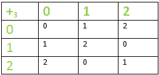
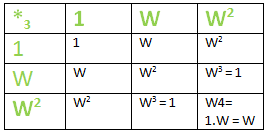

Homomorphism & Isomorphism of Group
Laws of Binary Operation :
In a binary
operation o, such that : o : G * G –> G on the set G is :
1.
Commutative –
aob = boa ; ∀ a,b ∈G
Example : ‘+’ is a binary operation on the set of natural
numbers ‘N’. Taking any 2 random natural numbers , say 6 &
70, so here a = 6 & b = 70,
a+b = 6 + 70 = 76 = 70 + 6
= b + a
This is true for all the numbers that come under the
natural number.
2. Associative –
ao(boc) = (aob)oc ; ∀ a,b,c ∈G
Example : ‘+’ is a binary operation on the set of natural
numbers ‘N’. Taking any 3 random natural numbers , say 2 , 3 &
7, so here a = 2 & b = 3 and c = 7,
LHS : a+(b+c) = 2 +( 3
+7) = 2 + 10 = 12
RHS : (a+b)+c = (2 + 3) + 7 = 5 + 7 =
12
This is true for all the numbers that come under the natural
number.
3. Left Distributive –
ao(b*c) = (aob) * (aoc) ; ∀ a,b,c ∈G
4. Right Distributive –
(b*c) oa = (boa) * (coa) ; ∀ a,b,c ∈G
5. Left Cancellation –
aob =aoc => b = c ; ∀ a,b,c ∈G
6. Right Cancellation –
boa = coa => b = c ; ∀ a,b,c ∈G
Algebraic Structure :
A non-empty set G
equipped with 1/more binary operations is called an algebraic
structure.
Example : a. (N,+) and b. (R, + , .),
where N is a set of natural numbers & R is a set of real numbers.
Here ‘ . ‘ (dot) specifies a multiplication operation.
GROUP :
An algebraic structure (G , o)
where G is a non-empty set & ‘o’ is a binary operation
defined on G is called a Group if the binary operation “o”
satisfies the following properties –
1. Closure –
a ∈ G ,b ∈ G => aob ∈ G ; ∀ a,b ∈ G
2. Associativity –
(aob)oc = ao(boc) ; ∀ a,b,c ∈ G.
3. Identity Element –
There exists e in
G such that aoe = eoa = a ; ∀ a ∈ G (Example – For
addition, identity is 0)
4. Existence of Inverse –
For each
element a ∈ G ; there exists an inverse(a-1)such that :
∈ G such that – aoa-1 = a-1oa
= e
Homomorphism of groups :
Let (G,o) &
(G’,o’) be 2 groups, a mapping “f ” from a group (G,o) to a
group (G’,o’) is said to be a homomorphism if –
f(aob) = f(a) o' f(b) ∀ a,b ∈ G
The essential point here is : The mapping f : G –> G’ may neither be a one-one nor onto mapping, i.e, ‘f’ needs not to be bijective.
Example –
If (R,+) is a group of all real
numbers under the operation ‘+’ & (R -{0},*) is another group
of non-zero real numbers under the operation ‘*’ (Multiplication)
& f is a mapping from (R,+) to (R -{0},*), defined as
: f(a) = 2a ; ∀ a ∈ R
Then f is a
homomorphism like – f(a+b) = 2a+b = 2a
* 2b = f(a).f(b) .
So the rule of homomorphism
is satisfied & hence f is a homomorphism.
Homomorphism Into –
A
mapping ‘f’, that is homomorphism & also Into.
Homomorphism Onto –
A
mapping ‘f’, that is homomorphism & also onto.
Isomorphism of Group :
Let (G,o) &
(G’,o’) be 2 groups, a mapping “f ” from a group (G,o) to a
group (G’,o’) is said to be an isomorphism if –
1. f(aob) = f(a) o' f(b) ∀ a,b ∈ G 2. f is a one- one mapping 3. f is an onto mapping.
If ‘f’ is an isomorphic mapping, (G,o) will be isomorphic to the group (G’,o’) & we write :
G ≅ G'
Note : A mapping f: X -> Y is called :
One – One – If x1 ≠x2, then f(x1) ≠ f(x2) or if f(x1) = f(x2) => x1 = x2. Where x1,x2 ∈ X
Onto – If every element in the set Y is the f-image of at least one element of set X.
Bijective – If it is one & Onto.
Example of Isomorphism Group –
If G is the
multiplicative group of 3 cube-root units , i.e., (G,o) = ( {1, w, w2
} , *) where w3 = 1 & G’ is an additive group
of integers modulo 3 – (G’, o’) = ( {1,2,3) , +3).
Then : G ≅ G’ , we say G is isomorphic to G’.


The structure & order of both the tables are same. The
mapping ‘f’ is defined as :
f : G -> G’ in such a way
that f(1) = 0 , f(w) = 1 & f(w2) = 2.
Homomorphism property : f(aob) =
f(a) o’ f(b) ∀ a,b ∈ G . Let us take a = w & b = 1
LHS
: f(a * b) = f( w * 1 ) = f(w) = 1.
RHS : f(a) +3
Sure, here's a comparison table outlining the properties of
homomorphisms and isomorphisms:
Property |
Homomorphism |
Isomorphism |
|---|---|---|
Definition |
A mapping between two algebraic structures that preserves the operations of the structures. |
A bijective homomorphism, meaning it's a homomorphism that is both injective and surjective. |
Preservation of operations |
It preserves the operations of the structures. For example, in group theory, if f:G→H is a homomorphism between groups, then f(ab)=f(a)f(b) for all a,b∈G. |
It not only preserves operations but also the structure itself. |
Injectivity |
Not necessarily injective (i.e., one-to-one). |
Must be injective (one-to-one). |
Surjectivity |
Not necessarily surjective (i.e., onto). |
Must be surjective (onto). |
Bijectivity |
Not required. |
Must be bijective (injective and surjective). |
Inverse mapping |
Does not always have an inverse mapping. |
Has an inverse mapping, since it's bijective. |
Structural property preservation |
It preserves some properties but not necessarily all. |
Preserves all structural properties. |
Example |
A linear transformation between vector spaces. |
An isomorphism between two isomorphic groups. |
This table should give you a clear comparison between homomorphisms and isomorphisms in algebraic structures.
f(b) = f(w) +3 f(1) = 1
+ 0 = 1
=>LHS = RHS
This mapping f is one-one & onto also, therefore, a homomorphism.